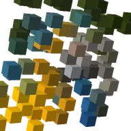

Serakan 3D

Menukar lapisan menjadi grid kepingan 3D yang berselerak.
Tetapan
| Tetapan | Jenis | Julat | Lalai |
|---|---|---|---|
| Bentuk | Pilihan | Kubus, Sfera, Segi empat sama, Bulatan | Kubus |
| Jarak grid | Nombor | 1 px hingga 500 px | 24 px |
| Saiz kepingan | Nombor | 0% hingga 200% | 80% |
| Kedalaman grid | Nombor | 1 hingga 16 | 1 |
| Jarak kedalaman | Nombor | 0 px hingga 500 px | 24 px |
| Serakan | Nombor | 0 px hingga 2000 px | 0 px |
| Benih | Nombor | 0 hingga 10000 | 0 |
| Putaran serakan | Nombor | 0 hingga 3600 | 0 |
| Putaran X | Sudut | -3600° hingga 3600° | 0° |
| Putaran Y | Sudut | -3600° hingga 3600° | 0° |
| Putaran Z | Sudut | -3600° hingga 3600° | 0° |
| Paksi putaran | Pilihan | X, Y, Z | Y |
| Sudut putaran | Sudut | -3600° hingga 3600° | 0° |
| Perspektif | Nombor | 0 hingga 1 | 0.5 |
| Arah cahaya | Sudut | -3600° hingga 3600° | 135° |
| Ketinggian cahaya | Nombor | 0 hingga 4 | 1 |
| Keamatan cahaya | Nombor | 0 hingga 2 | 1 |
| Lorekan | Nombor | 0 hingga 1 | 0.6 |